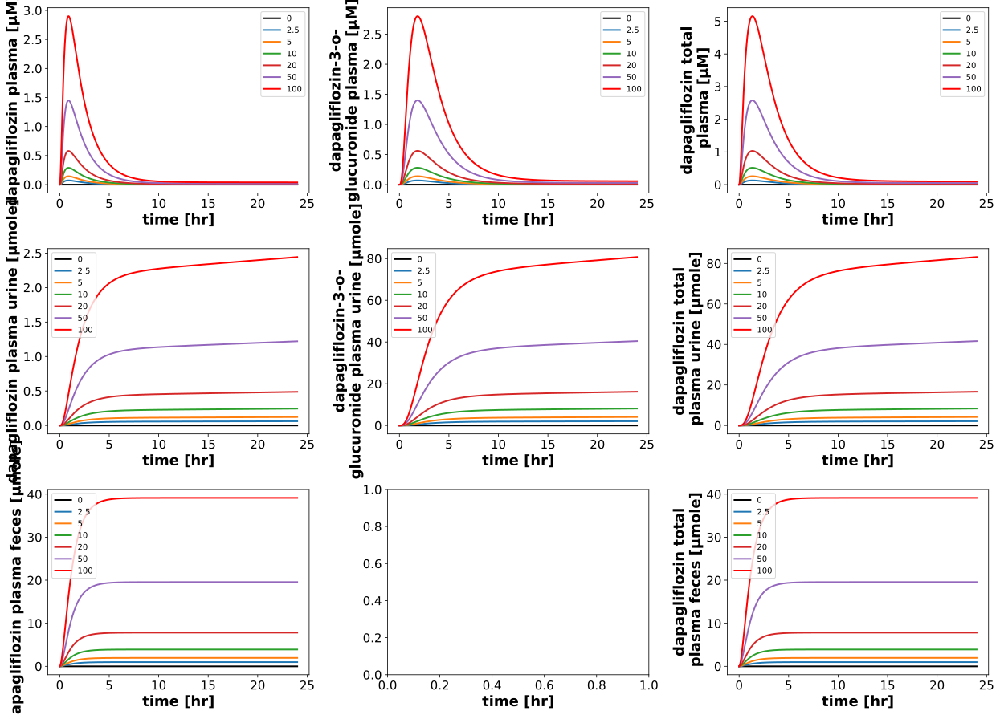
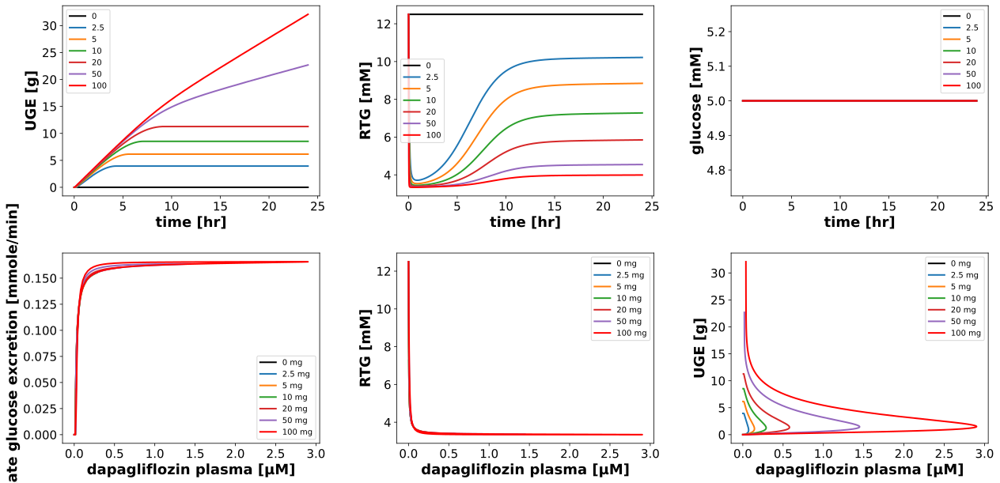

DoseDependencyExperiment
Models
Datasets
Figures
- Fig_dose_dependency_pk: DoseDependencyExperiment_Fig_dose_dependency_pk.svg
- Fig_glucose_dependency_pk: DoseDependencyExperiment_Fig_glucose_dependency_pk.svg
- Fig_dose_dependency_pd: DoseDependencyExperiment_Fig_dose_dependency_pd.svg
- Fig_glucose_dependency_pd: DoseDependencyExperiment_Fig_glucose_dependency_pd.svg
{kind=link}
{kind=link}
Fig_dose_dependency_pk
|  |
Fig_glucose_dependency_pk

|
Fig_dose_dependency_pd
|  |
Fig_glucose_dependency_pd

|
Code
../../../../experiments/misc/dose_dependency.py
from copy import deepcopy
from typing import Dict
from sbmlsim.plot import Axis, Figure, Plot
from sbmlsim.simulation import Timecourse, TimecourseSim
from pkdb_models.models.dapagliflozin.experiments.base_experiment import (
DapagliflozinSimulationExperiment,
)
from pkdb_models.models.dapagliflozin.helpers import run_experiments
class DoseDependencyExperiment(DapagliflozinSimulationExperiment):
"""Tests po application."""
doses = [0, 2.5, 5, 10, 20, 50, 100] # [mg]
glucoses = [5, 6, 7, 8, 9, 10, 11] # [mM]
colors = ["black", "tab:blue", "tab:orange", "tab:green", "tab:red", "tab:purple", "red"]
def simulations(self) -> Dict[str, TimecourseSim]:
Q_ = self.Q_
tcsims = {}
for dose in self.doses:
tcsims[f"dap_dose_{dose}"] = TimecourseSim(
Timecourse(
start=0,
end=24 * 60, # [min]
steps=3000,
changes={
**self.default_changes(),
f"PODOSE_dap": Q_(dose, "mg"),
},
)
)
for glc in self.glucoses:
tcsims[f"dap_glucose_{glc}"] = TimecourseSim(
Timecourse(
start=0,
end=24 * 60, # [min]
steps=3000,
changes={
**self.default_changes(),
f"PODOSE_dap": Q_(10, "mg"),
f"[KI__glc_ext]": Q_(glc, "mM"), # FPG
},
)
)
return tcsims
def figures(self) -> Dict[str, Figure]:
return {
**self.figure_pk(),
**self.figure_pd(),
}
def figure_pk(self) -> Dict[str, Figure]:
figures = {}
for key in ["dose", "glucose"]:
if key == "dose":
values = self.doses
elif key == "glucose":
values = self.glucoses
fig = Figure(
experiment=self,
sid=f"Fig_{key}_dependency_pk",
num_rows=3,
num_cols=3,
)
plots = fig.create_plots(xaxis=Axis("time", unit="hr"), legend=True)
sids = [
# plasma
"[Cve_dap]",
"[Cve_d3g]",
"[Cve_daptot]",
# urine
"Aurine_dap",
"Aurine_d3g",
"Aurine_daptot",
# feces
"Afeces_dap",
None,
"Afeces_daptot",
]
for ksid, sid in enumerate(sids):
if not sid:
continue
plots[ksid].set_yaxis(label=self.labels[sid], unit=self.units[sid])
for kval, value in enumerate(values):
plots[ksid].add_data(
task=f"task_dap_{key}_{value}",
xid="time",
yid=sid,
label=f"{value}",
color=self.colors[kval],
)
figures[fig.sid] = fig
return figures
def figure_pd(self) -> Dict[str, Figure]:
figures = {}
for key in ["dose", "glucose"]:
if key == "dose":
values = self.doses
elif key == "glucose":
values = self.glucoses
fig = Figure(
experiment=self,
sid=f"Fig_{key}_dependency_pd",
num_rows=2,
num_cols=3,
)
plots = fig.create_plots(xaxis=Axis("time", unit="hr"), legend=True)
sids = [
"KI__UGE",
"KI__RTG",
"[KI__glc_ext]",
]
for ksid, sid in enumerate(sids):
plots[ksid].set_yaxis(label=self.labels[sid], unit=self.units[sid])
for ksid, sid in enumerate(sids):
for kval, value in enumerate(values):
# simulations
plots[ksid].add_data(
task=f"task_dap_{key}_{value}",
xid="time",
yid=sid,
label=f"{value}",
color=self.colors[kval],
)
for ksid in range(3, 6):
plots[ksid].set_xaxis(label=self.label_dap_plasma, unit=self.unit_dap)
plots[3].set_yaxis(label="Rate glucose excretion", unit="mmole/min")
plots[4].set_yaxis(label=self.label_rtg, unit=self.unit_rtg)
plots[5].set_yaxis(label=self.label_uge, unit=self.unit_uge)
for kval, value in enumerate(values):
# simulations
plots[3].add_data(
task=f"task_dap_{key}_{value}",
xid="[Cve_dap]",
yid="KI__GLCEX",
label=f"{value} mg",
color=self.colors[kval],
)
plots[4].add_data(
task=f"task_dap_{key}_{value}",
xid="[Cve_dap]",
yid="KI__RTG",
label=f"{value} mg",
color=self.colors[kval],
)
plots[5].add_data(
task=f"task_dap_{key}_{value}",
xid="[Cve_dap]",
yid="KI__UGE",
label=f"{value} mg",
color=self.colors[kval],
)
figures[fig.sid] = fig
return figures
if __name__ == "__main__":
run_experiments(DoseDependencyExperiment, output_dir=DoseDependencyExperiment.__name__)